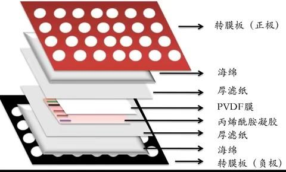

Western Blot
Last updated:Protocol
SDS-PAGE
ref:
~15kDa, 15%PAGE胶, 90V 20min and then 150V 50min
转膜
Wet

裁膜
8.5 x 6.5 cm
ref:
~15kDa, 350mA, 60min
封闭和孵育抗体
PBST: PBS/Tween20, 1000:1, v/v
- 封闭
- 5% BSA溶液封闭1小时, 用PBST配制
- PBST洗涤3次, 每次5分钟
- 一抗
- 1:1000孵育2小时或4°C过夜, 用一抗稀释液配制, 可回收使用
- PBST洗涤3次, 每次5分钟
- 二抗
- 1:5000-1:2000孵育1小时或4°C过夜, 用封闭液配制
- PBST洗涤3次, 每次5分钟